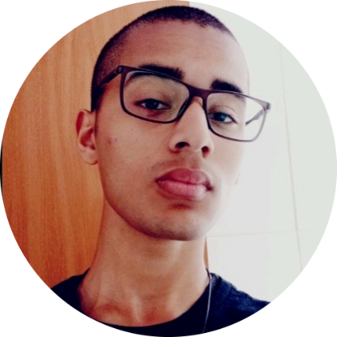

Meu Perfil Social
Desafio do perfil social aonde que temos que colocar a nossa foto e fazer um breve resumo sobre a gente e sem seguida colocar nossas redes sociais. Esse desafio é otimo para praticar o uso de links e a adição de imagens em um site.
Quem sou seu?

Sou discente do curso de Análise e Desenvolvimento de Sistema da Faculdade de Tecnologia de Mogi das Cruzes.
Desde o meu ensino médio, tenho buscado aprender sobre a área de Tecnologia da Informação, em especial, sobre as
diferentes linguagens de programação (Python, JavaScript, algorítimo e lógica de programação).
No momento, estou em busca da minha primeira oportunidade profissional (estágio) paraaprimorar as
minhas habilidades e conhecimentos relacionados a área de Tecnologia.
Como falar comigo? (clique na icone)
 Meu GitHub
Meu GitHub
 Meu linkedln
Meu linkedln